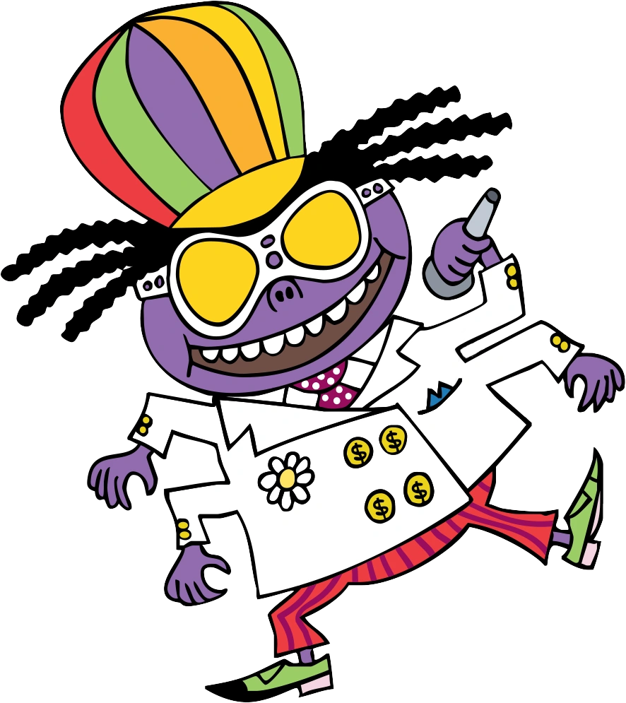
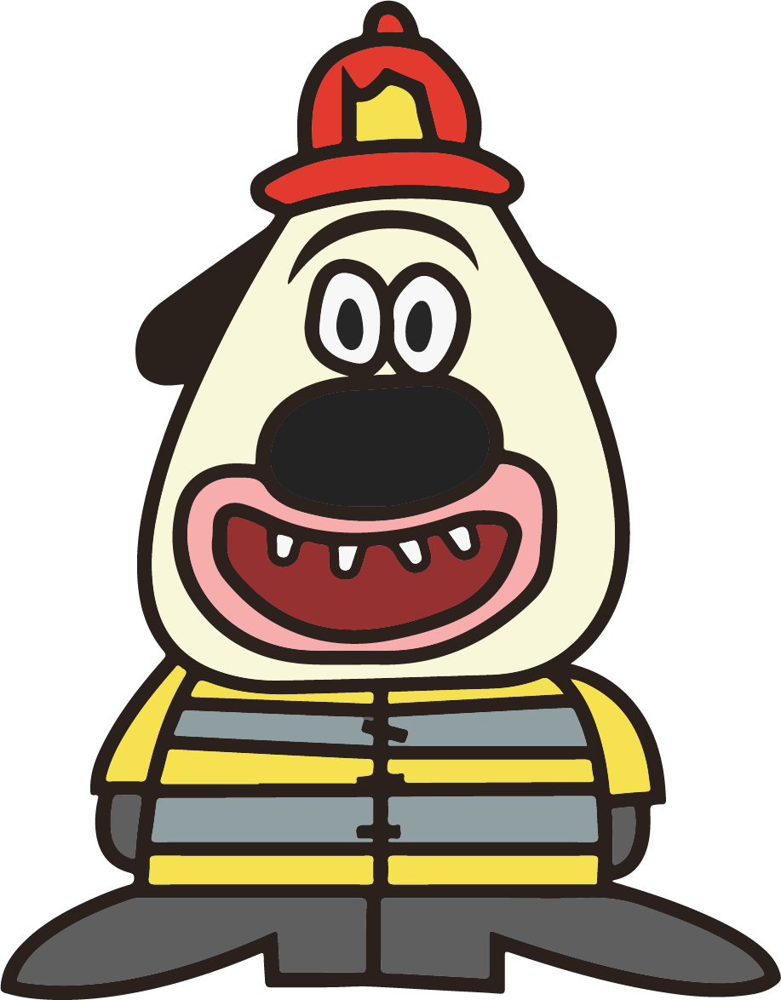

In the spring of 2001, almost five years after the original PlayStation game first turned PaRappa Rappa into a household character in Japan, Sony Music Entertainment Visual Works and Fuji Television sat down with animation studio J.C.Staff to bring PaRappa Town to weekly television. The result — simply titled PaRappa the Rapper — premiered on Fuji TV's Saturday-morning lineup on April 14, 2001 and ran for thirty episodes until its hour-long finale on January 11, 2002. It is the only animated incarnation of the franchise to date, and the only place where Rodney Alan Greenblat's flat paper-doll cast has ever existed as fully traditional, hand-drawn animation cels. 2001年春、初代PS版『パラッパラッパー』がパラッパ・ラッパを日本中の人気キャラクターに押し上げてからおよそ5年。ソニー・ミュージックエンタテインメント ビジュアルワークスとフジテレビは、アニメーションスタジオジェー・シー・スタッフを起用し、ついにパラッパタウンを毎週放送のテレビアニメとして届ける企画を立ち上げました。タイトルもそのまま『パラッパラッパー』。2001年4月14日のフジテレビ系土曜午前枠でスタートし、2002年1月11日の1時間スペシャルまで全30話が放送されました。本作は現在に至るまでシリーズ唯一のアニメ化作品であり、ロドニー・アラン・グリーンブラットの「平面紙人形」キャラクターたちが、伝統的な作画によるセルアニメとして動いた唯一の場でもあります。
Original run: April 14, 2001 – January 11, 2002. Network: Fuji Television (FNS network). Format: 30 episodes (the final episodes 29 and 30 were broadcast back-to-back as a one-hour special). Animation studio: J.C.Staff. Producers: Sōsuke Osabe and Hideo Katsumata for Sony Music Entertainment Visual Works. Directed by Hiroaki Sakurai. Series composition / head writer: Yoshio Urasawa. Music: Masaya Matsuura, Yoshihisa Suzuki, and Yasushi Kurobane. The series was framed as a stand-alone weekly comedy aimed at family audiences rather than as a direct adaptation of any one game, and is best understood as a "slice-of-life-in-PaRappa-Town" prequel to the events of the original PS1 title. 放送期間：2001年4月14日〜2002年1月11日。放送局：フジテレビ（フジテレビ系FNS）。話数：全30話（最終話の29・30話は1時間スペシャルとして連続放送）。アニメーション制作：ジェー・シー・スタッフ。プロデューサー：長部聡介、勝俣英夫（ソニー・ミュージックエンタテインメント ビジュアルワークス）。監督：桜井弘明。シリーズ構成・脚本：浦沢義雄。音楽：松浦雅也、鈴木慶久、黒鞘靖。本作はファミリー層向けの単発エピソード型コメディとして企画されており、特定のゲームをそのまま映像化したものではなく、初代PS版のさらに前の時間軸を描く「パラッパタウンの日常譚」として位置付けられています。
| Original Concept原作 | Masaya Matsuura, Rodney Alan Greenblat / NanaOn-Sha |
| Director監督 | Hiroaki Sakurai (桜井弘明) |
| Series Compositionシリーズ構成 | Yoshio Urasawa (浦沢義雄) |
| Character Designキャラクターデザイン | Based on Rodney A. Greenblat originals, adapted for animation by J.C.Staffロドニー・A・グリーンブラットの原案を基に、ジェー・シー・スタッフがアニメ用にリデザイン |
| Music音楽 | Masaya Matsuura, Yoshihisa Suzuki, Yasushi Kurobane |
| Animation Studioアニメーション制作 | J.C.Staff |
| Production製作 | Fuji Television, SME Visual Works, Aniplex |
| Network放送局 | Fuji TV (FNS) |
| Episodes話数 | 30 (final 29–30 broadcast as 1-hour special) |
| Run放送期間 | April 14, 2001 – January 11, 2002 |
The hardest creative problem the production faced was an obvious one: PaRappa is, by design, two-dimensional. Rodney Greenblat's original character sheets explicitly treat PaRappa, Katy Kat, PJ Berri, and Sunny Funny as flat illustrations whose entire personality lives in pose and silhouette. The PS1 game leaned into that, rendering everyone as paper cut-outs floating through 3D environments. For weekly television, J.C.Staff and director Hiroaki Sakurai had to figure out how to keep that paper-doll charm while still producing a show that could move, gesture, and emote across 22 minutes per episode. 企画段階で最も大きな課題となったのは明白でした。パラッパはそもそも「平面」のキャラクターだということです。ロドニー・グリーンブラットによる原案では、パラッパ、ケイティ・キャット、PJベリー、サニー・ファニーらは、いずれも姿勢とシルエットだけで個性を表現する平面イラストとして設計されています。PS版ではその設計をそのまま活かし、3D空間に紙人形のキャラクターを配置するという表現が採用されました。週1放送のテレビアニメとなれば話は別で、J.C.スタッフと桜井弘明監督は、紙人形ならではの魅力を保ちつつ、毎話22分のなかで芝居や表情、身振りで物語を運ぶ方法を模索する必要がありました。
Their solution was a hybrid: they kept Greenblat's flat, frontal silhouettes wherever an iconic pose was called for — title cards, song-and-dance moments, big reaction shots — but quietly reintroduced soft three-quarter angles, simple eye animation, and gentle volumetric shading for the in-between dialogue beats. Backgrounds were redrawn in a thicker-outlined cel-paint style that matched the saturated colour palette of PaRappa Town in the games but read as flat gouache rather than 3D scenery. The compromise gives the anime its own distinct visual identity: it is unmistakably the same cast as the PlayStation original, but slightly rounder, slightly warmer, and built for the rhythm of TV comedy rather than for rapping along to a beat. 彼らの答えはハイブリッドでした。タイトルバック、ミュージカル風シーン、大きなリアクションカットなど、決め絵が必要な場面ではグリーンブラットの正面ベタ塗りシルエットをそのまま採用。一方でセリフやちょっとした芝居が中心の場面では、ナチュラルな斜めアングル、シンプルな目のパカパカ、軽い陰影をそっと足しています。背景もパラッパタウン本来の高彩度カラーパレットを活かしつつ、3D風ではなく、太めの輪郭線とグワッシュ調のセル塗りで描き直されました。結果として、アニメ版はPS版とまぎれもなく同じキャラクター造形を持ちながらも、わずかに丸みと温かみが加わり、ラップに合わせるための映像ではなく、テレビコメディのリズムに最適化された独自のビジュアルアイデンティティを獲得しています。

The anime keeps the full PS1 cast — PaRappa, his crush Sunny Funny, his best friend PJ Berri, the no-nonsense Katy Kat, and most of the rapping instructors — but expands the world with a small troupe of TV-only originals who appear in nearly every episode. Matt Major is a sporty, popular dog who joins PaRappa and PJ as a third member of the boys' inner circle and is most often seen on a basketball court. Paula Fox is Sunny's high-strung friend (and Katy's reluctant rival), introduced to give the girls' side of the cast a comic foil. Pinto Rappa, PaRappa's tiny baby sister, becomes a recurring "wandering toddler" engine for trouble. The villains are Gaster and Groober, a pair of inept, heavily disguised crooks whose schemes the kids of PaRappa Town accidentally derail every other week. アニメ版にはPS版のキャストが全員登場します。パラッパ、想い人のサニー・ファニー、親友PJベリー、しっかり者のケイティ・キャット、各先生たちはほぼそのまま登場するうえに、ほぼ毎話顔を見せるテレビアニメ版オリジナルキャラクターも追加されました。マット・メジャーはスポーティで人気者の犬で、パラッパ・PJと並んで男子の3人組を構成し、バスケットコートで描かれる場面が多いキャラクター。ポーラ・フォックスはサニーの落ち着きのない友人にしてケイティのライバル枠で、女子組サイドのコメディ要員として配置されました。パラッパの妹ピント・ラッパは、よちよち歩きで街に騒動を呼び込む常連トラブルメーカー。悪役のガスターとグルーバーはマヌケな変装犯罪者コンビで、毎回パラッパタウンの子どもたちに作戦を阻止されるお約束の立ち位置に収まりました。
| PaRappa Rappa | Miyu Irino (入野自由) |
| PJ Berri | Masami Kikuchi (菊池正美) |
| Sunny Funny | Mika Kanai (かないみか) |
| Katy Kat | Rina Nakayama (中山理奈) |
| Matt Major | Kenichi Suzumura (鈴村健一) |
| Paula Fox | Akiko Kobayashi (小林晃子) |
| Boxy Boy | Masashi Ebara (江原正士) |
| Gaster | Ryō Naitō (内藤玲) |
| Groober | Akio Suyama (陶山章央) |
| MC King Kong Mushi | Norio Wakamoto (若本規夫) |
Where the games hang their structure on a stage-by-stage rapping showdown, the anime is built almost entirely around the kind of low-stakes, week-to-week schoolyard storytelling that head writer Yoshio Urasawa was already famous for in shows like Tottoko Hamtaro and Magical DoReMi. Most episodes drop the gang into a single self-contained problem — PaRappa promises two different friend groups he'll hang out with them on the same afternoon and has to scramble to keep both sides happy; an aging florist named Dorothy wants one last dance recital before her old theatre is demolished; a stray pet escapes; a school festival goes off the rails; Pinto vanishes into the city for an afternoon. Songs and rapping appear, but they tend to surface naturally inside the story rather than gate-keep gameplay-style "stages."
Recurring threads run beneath the standalone episodes. PaRappa's crush on Sunny Funny stays politely unstated for most of the run; Katy Kat's rivalry with Paula simmers; Gaster and Groober keep failing upward; PJ continues to be hungry. The 30-episode arc culminates in the back-to-back episodes 29 and 30, broadcast as a single one-hour finale on January 11, 2002.
ゲーム本編がステージごとのラップ対決という構造で物語を進めるのに対し、アニメ版はほぼ全話、シリーズ構成の浦沢義雄が『とっとこハム太郎』『おジャ魔女どれみ』などで得意としてきたスタイル、すなわち低カロリーな日常コメディとして組み立てられています。多くの話は単発のシンプルな問題でパラッパたちを動かします。
同じ日の午後にバスケと買い物の両方の約束をしてしまい、両グループを満足させようと奔走するパラッパ。引退した花屋のドロシーが、取り壊し直前の昔の劇場でもう一度ダンスステージに立ちたいと願う話。逃げ出した飼いペット、暴走する学園祭、午後だけ街を彷徨う妹ピント。
ラップやソングシーンも登場しますが、ゲームのような「ステージクリア型」の関門ではなく、自然に物語の中から立ち上がってくる演出として配置されているのが特徴です。
単発エピソードの下には、いくつかの連続的なテーマも流れています。パラッパのサニーへの想いは最終盤までほぼ口に出されないまま続き、ケイティ・キャットとポーラのライバル関係はじりじり熱を上げ、ガスター＆グルーバーは毎回うまく行きそうでしくじり、PJはずっと何か食べています。30話のシリーズは、2002年1月11日に1時間スペシャルとして放送された第29・30話で締めくくられました。

Tonally, the show splits the difference between the dry absurdism of the games and the gentler, kid-friendly comedy that Saturday-morning Fuji TV demanded. PaRappa's interior monologue is the centre of gravity — the audience hears him narrate his own escalating panic as plans fall apart. PJ Berri's deadpan, Boxy Boy's robotic literalism, and Mushi's manic intensity (Norio Wakamoto, in an extremely Norio Wakamoto performance) keep the comic register varied. Visual gags are deliberately low-budget by design: characters slide off-screen on conveyor belts, bodies stretch sideways for a single beat, and hats fly off into the void. The show is sweet rather than sharp, but never saccharine. 作品の手触りとしては、ゲームの乾いた不条理コメディと、フジテレビ土曜午前帯に求められる子ども向けの優しいコメディとのちょうど中間を行きます。物語の重心はパラッパの内心モノローグで、計画が次々と狂っていく中でじわじわ膨らむ自身の焦りを、彼自身がそのまま実況していくスタイル。PJベリーのテンション低めのツッコミ、ボクシー・ボーイのロボット的な直訳ボケ、そして若本規夫が「いつもの若本」全開で演じるムシのハイテンションが、コメディのレジスターに変化を与えています。ビジュアルギャグは意図的にチープに作られており、コンベアでスッと画面外にフレームアウトしたり、瞬間的に体が横に伸びたり、帽子だけ虚空へ飛んでいったりと、ロドニー・グリーンブラット原案らしい遊び心が随所に効いています。総じて、辛口ではなく優しい、けれど甘ったるすぎはしないトーンに仕上がっています。
For the first half of the run (episodes 1–15), the opening title is "Love Together: PaRappa the Rapper MIX" by Tokyo pop-funk band Nona Reeves — a remix of the band's existing single explicitly retooled for the anime, with PaRappa-themed cues laced into the brass arrangement. The closing theme over the same block is "School Girl" by R&B duo Bennie K. From episode 16 onward the music package was completely refreshed: the new opening became "Attitude" by then-rising R&B singer Crystal Kay, and the new ending was "Yellow Balloon" by Chara. All four songs are now strongly associated with the anime in Japan and circulate well outside the show's audience. 第1〜15話までの前期OPには、東京のポップ／ファンクバンドノーナ・リーヴスの「Love Together ～PaRappa the Rapper MIX～」が起用されました。これは同バンドの既発曲をアニメ用にリミックスしたもので、ブラスアレンジの随所にパラッパ世界らしいモチーフが仕込まれています。同じ前期EDには、R&BユニットBENNIE Kの「School Girl」が採用されました。第16話以降、楽曲パッケージは全面刷新され、新OPには当時急上昇中のR&BシンガーCrystal Kayの「Attitude」、新EDにはCharaの「Yellow Balloon」が起用されています。これら4曲は現在も日本ではアニメ版『パラッパラッパー』と強く結び付けられており、本作のファン以外の層にも広く届いた楽曲群となっています。

The CD single bundling the anime's first opening theme. The disc collects four cuts: the "PaRappa the Rapper MIX" used in the show, the original-version "Love Together," the album track "Just My Imagination (Running Away With Me)," and the instrumental of the PaRappa mix. Released by Warner Music Japan with cover art that gives PaRappa his own miniature record-sleeve portrait — a small but telling piece of OP-tie-in marketing for a band that wasn't otherwise associated with kids' programming. アニメ版前期オープニング主題歌を収めたCDシングル。収録曲は劇中で使用された「PaRappa the Rapper MIX」、オリジナル・バージョンの「Love Together」、アルバム収録曲「Just My Imagination（Running Away With Me）」、そしてPaRappa MIXのインストゥルメンタルの全4曲。ワーナーミュージック・ジャパンからリリースされ、ジャケットにはパラッパ単体のミニ・ジャケット風ポートレートが描かれた、子供番組とは縁の薄かったバンドにとっては象徴的なタイアップ盤です。

The first of two original soundtrack CDs released for the anime, with music supervised by Masaya Matsuura — the same composer behind the PS1 game — alongside Yoshihisa Suzuki and Yasushi Kurobane. The album collects the show's incidental cues, character themes, and short song interludes from the first half of the broadcast run. Sleeve art uses a fully posed PaRappa mid-rap on a deep purple ground, and the track listing leans heavily on Matsuura's signature blend of cartoon hip-hop, easy-listening jazz, and synthetic samba. アニメ版のために制作された2枚組オリジナルサウンドトラックのうちの1作目。PS版本編と同じく松浦雅也が音楽を統括し、鈴木慶久・黒鞘靖が楽曲を共同担当しました。本盤には前期放送ぶんの劇伴、キャラクターテーマ、短い挿入歌などが収録されています。ジャケットは深い紫の地に、ラップ中のパラッパが大きく配されたデザイン。トラック構成も、松浦雅也らしいカートゥーン・ヒップホップ、イージーリスニング・ジャズ、シンセ・サンバが交差する作風がそのまま反映されています。

The companion volume, released after the second cour finished broadcasting. Vol. 2 covers the second half of the run, including cues written around the new "Attitude" / "Yellow Balloon" music package, and rounds out the show's incidental score. The cover replaces Vol. 1's purple ground with a sliced-orange motif, in keeping with the brighter mid-show creative refresh. 続編にあたるボリューム2は、後期放送終了後にリリースされました。後期分の劇伴に加え、第16話以降の新主題歌「Attitude」「Yellow Balloon」周りで制作された楽曲群も収録され、本作の劇伴サウンドが網羅されています。ジャケットはVol.1の紫地から、カットされたオレンジを大胆に配したビジュアルへ刷新され、シリーズ後期のフレッシュな空気感に合わせたデザインになっています。
In Japan the show aired weekly on Fuji Television and its FNS network affiliates throughout 2001. The home-video release rolled out across eight DVD volumes (titled "Stage.1" through "Stage.8") between 2001 and March 2002, each disc collecting roughly four episodes. The volumes were issued by Sony's home-video arm — the discs themselves carry the SME (Sony Music Entertainment) and S.E.P. imprints — and have remained the only authorised way to watch the series on a permanent format. No Blu-ray reissue, no streaming licence, and no English-language commercial DVD release ever followed. English-speaking fans went without an official localisation for the entire 21st-century run of the show; a fan-subbed compilation built from the Japanese DVD masters circulated in 2018 and has since been the standard way new viewers encounter it outside Japan. The lack of a dub puts the anime in a strange archival position: it is one of the most visible adaptations of a major PlayStation IP that has never been formally released in the West. 日本国内では2001年を通じてフジテレビ系FNSにて毎週放送されました。映像ソフトは全8巻のDVD（「Stage.1」〜「Stage.8」）として2001年から2002年3月にかけて順次リリースされ、各巻に約4話ずつが収録されています。リリース元はソニーの映像ソフト部門で、ディスクにはSME（ソニー・ミュージックエンタテインメント）およびS.E.P.のクレジットが入っています。本作のオフィシャルなパッケージはこのDVDシリーズが現在唯一の選択肢で、Blu-ray再発、配信ライセンス、海外向け英語版DVDなどはいずれもリリースされていません。 英語圏のファンは21世紀を通じて公式ローカライズに恵まれず、2018年頃に日本版DVDマスターから作られたファンサブ版が流通し、それが事実上の海外視聴ルートとして定着しています。公式英語版が一度も存在しないという事実は、PlayStation主要IPの主要アニメ化作品としては非常に珍しい立ち位置です。

The final volume in the series' eight-DVD home-video run, released by S.E.P. on March 20, 2002 to coincide with the finale broadcast. Stage.8 collects the closing episodes of the show, including the one-hour finale that aired on January 11, 2002. The cover composition pulls back from the gag-comedy framing of the earlier volumes and stages PaRappa and Sunny Funny in formal wear, hand in hand inside a pink heart, with PJ Berri and Pinto framed in the background — a quietly sentimental capstone for the set. 本シリーズの全8巻DVDの最終巻。発売はS.E.P.、2002年3月20日。本巻には、2002年1月11日放送の1時間スペシャル最終話を含むラスト数話が収められています。前巻までのギャグ寄りジャケットとは趣を変え、ピンクのハート枠のなかでフォーマル衣装のパラッパとサニー・ファニーが手をつなぎ、背後にPJベリーとピントが配されるという、シリーズの締めくくりにふさわしい少しセンチメンタルなビジュアルになっています。
The anime is often the forgotten middle child of the PaRappa franchise — overshadowed by the cult success of the original 1996 game and the long-tail merch boom that followed Um Jammer Lammy and PaRappa 2. Inside Japan, however, it slots cleanly into the early-2000s J.C.Staff comedy lineage alongside DiGi Charat, Magical DoReMi, and Sakurai's later Bottle Fairy; in the West it has acquired a quieter cult following, mostly via fan subtitles and game-history documentaries. PaRappa himself would not appear in another animated production at this scale again, which has only sharpened the show's value as the only sustained look at PaRappa Town as a place where people actually live, eat, fight, and rap their way out of small problems — week by week, for thirty episodes. パラッパラッパーシリーズの中でも、アニメ版はしばしば「忘れられた中間っ子」として語られます。1996年のオリジナル版がもたらしたカルト的支持や、『ウンジャマ・ラミー』『パラッパラッパー2』を中心としたグッズブームの陰に隠れがちなのが実情です。一方、日本国内では2000年代初頭のJ.C.スタッフ系コメディ作品群（『デ・ジ・キャラット』、『おジャ魔女どれみ』、桜井監督の後年作『瓶詰妖精』など）の系譜にすっと収まる位置にあり、海外ではファンサブやゲーム史系のドキュメンタリー経由で、静かながら確かなカルト人気を獲得しています。これ以降、パラッパが同規模のアニメーション作品に再登場することはなく、その事実が逆に、本作が「パラッパタウンに人々が実際に暮らし、食べ、ケンカし、小さなトラブルをラップで切り抜けていく場所」として描かれた、唯一にして最長のテキスト群であることの価値を際立たせています。週ごとの30話というかたちで、それは今も静かに残り続けています。